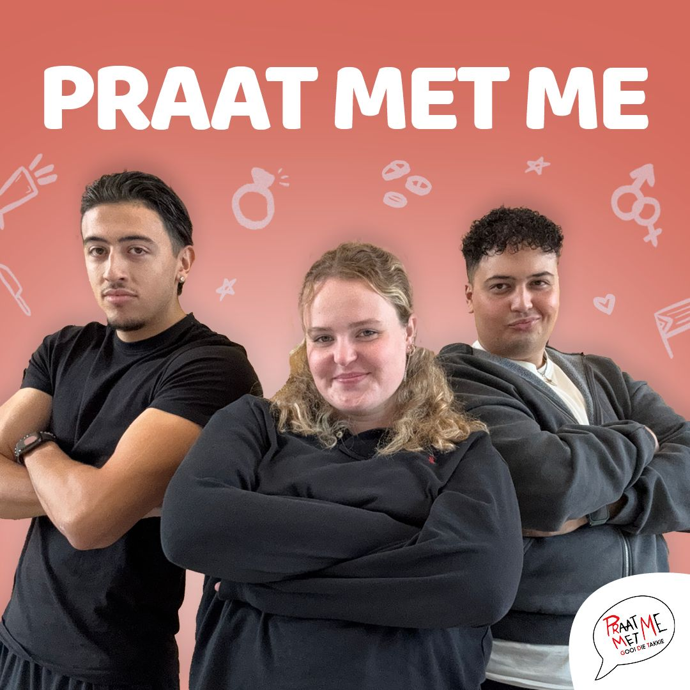

PraatMetMe
Gooi die Takkie!
PraatMetMe
Afleveringen
- 
S1E06
"Hij ging er vandoor met mijn beste vriendin omdat..." -
S1E05
"Op mijn 15e was ik bijna overtuigd om in mijn eigen huis te beroven"
| PraatMetMe featuring Specs Gonzalez -
S1E04
"Ik ben eindelijk gestopt met coke, maar ik voel me niet beter!"

Comments
-
Anoniem
"Specs was geweldig! Bizar verhaal en nog harder gelachen." -
Confession_crew
"Dat verhaal over verraad tussen vrienden... ik voelde die pijn." -
Lisa
"Vriendin zoenen op dat feest... drama, maar top advies!"